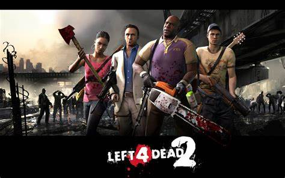
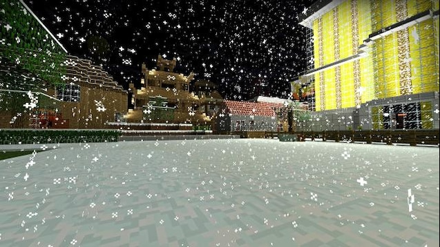
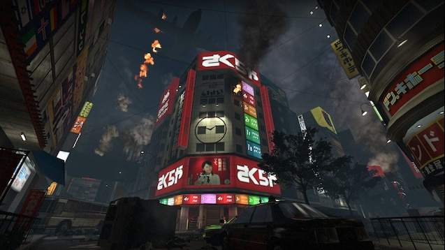

L4D2おすすめmodステージ紹介
このサイトではLeft4Dead2"のsteamワークショップから追加できるおすすめのステージについて紹介していきます。
*注意点:紹介するステージは実際に遊び、なるべく厳選していますが、万が一ウイルス等が入っている場合があるため注意して扱ってください。

DeathCraft2

このステージはマインクラフトをもととしたステージです。
ステージ内では特殊感染者も含めた、すべての感染者の見た目がマイクラのmobの見た目に変更されたり、
建物やアイテムのテクスチャもすべてマイクラの見た目になります。br>
また、キャンペーンのボリュームはかなりありますが、チャプターが適度に分けられており、遊びやすいキャンペーンになっています。
ほかにも隠し要素がある等かなりクオリティが高いのでぜひともやってみてください。
なお、このmodはすべてのチャプター1～7までに加え、Fixとmod名にあるものも入れていないとマルチプレイで風合いが発生するのできおつけてください。
yama

このステージは、歌舞伎町をもっとしchapterから始まるステージです。
一部日本語がおかしい場所もありますが、基本的に非常にクオリティが高く、ゾンビ作品ではまり選ばれることがない日本を舞台として楽しめるステージです。
感染者の見た目も変わりますが、違和感があるような見た目はなく、プレイヤー自体もスキンが変わるためマルチでもワイワイと楽しむことができるおすすめのステージです。
注意点としては、part数が多く、また修正パッチも入れる必要があるため、ダウンロードの際は要確認です。
トップに戻る